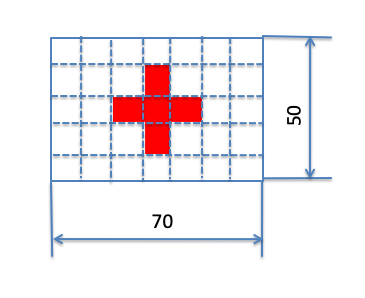

コンピューティング実習 第１２回課題
開発環境
- 開発環境はKenyaを使い，HTMLと埋め込まれたJavascriptプログラム（場合によってはCSSも使用して良い）として作成してください．
課題12-0 数あてゲーム
次の動画で示すようなアプリケーションを作りなさい．
動作仕様（動画）
仕様
- ユーザはStartボタンを押すと，システムは１ から２０までの乱数を生成し，記憶する．
- ユーザは生成された数を予想し，回答欄に入力して「回答」ボタンを押す
- 回答が正しければ「あたり！」と表示
- 回答が誤りであれば「はずれ！」のあとに，
- 正解が入力値より大きい場合「それより大きいです」と表示する．
- 正解が入力値より小さい場合「それより小さいです」と表示する．
- テンプレートを使って良い
課題12-1 canvasの練習
次の動画で示すようなアプリケーションを作りなさい．
動作仕様（動画）
仕様
- Aボタンを押すと、canvas内のどこか（乱数を使い，場所は毎回変わる）に直径10の円を表示する
- Bボタンを押すとクリア（すべての丸を消去）する
- テンプレートを使って良い
課題12-2 旗の描画
次の動画で示すようなアプリケーションを作りなさい．
動作仕様（動画）
仕様
- Aボタンを押すと，canvas上に赤十字の旗を描く
- 旗の表示位置（矩形の左上隅の座標）は，テキストボックス（x座標，y座標をテキストフィールド）から取得する
- 旗のサイズは，下図を参照
- 黒い背景（canvasの背景）
- テンプレートを使って良い

ヒント
- 座標を数字で指定して旗を１つ描いてみる
- 上記プログラムを以下の様に修正
- 国旗の左上隅の座標の変数を宣言，その変数に値（例えばx=0, y=0）を代入，国旗の図形を描く命令の座標を変数で指定して描く
- 国旗の左上隅の座標の変数に テキストフィールドの値を代入する
- 何回か座標を変えてみて，きちんと描画されることを確認する
課題12-3 くだもの検索
次の動画で示すようなアプリケーションを作りなさい．
画面仕様（静止画）
仕様
- ユーザはテキストフィールドに文字を入れ，検索ボタンを押す
- システムは，テキストフィールドに入力された文字を調べて
- “りんご”ならりんごの絵を
- “みかん”ならみかんの絵を
- それ以外の文字列なら 「みつかりませんでした」という文字列を
- それぞれcanvasに表示する
- 表示する画像は，google画像検索などで探して，使用する
- テンプレートを使って良い
課題12-4 ピラミッド
次の動画で示すようなプログラムを作りなさい．
動作仕様（動画）
仕様
- ユーザは段数を入力する
- システムは入力された段数のピラミッドを出力する
- テンプレートを使って良い
課題12-5 追いかけっこ
次の動画で示すようなプログラムを作りなさい．
動作仕様（動画）
仕様
- 追いかけっこゲームである
- canvasにユーザ（白丸）と敵（黒丸）を表示する．
- 丸の大きさは任意であるが，画面仕様での大きさは，直径10である
- 4つの方向ボタンで，白丸を操作する
- 同時に，敵も乱数を使い，1/4の確率で上下左右いずれかに移動する
- 敵を捕まえたら，クリア
- テンプレートを使って良い
追加仕様
- ユーザ，敵とも画面外に行かないようにする
- クリアの画面を出したり，何ステップでクリアできたかをハイスコア表示したりする